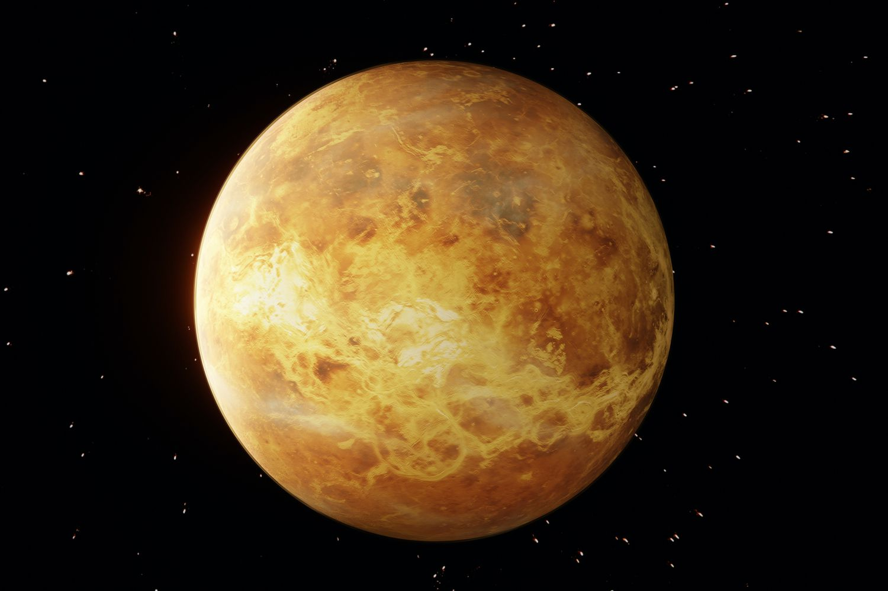

Venus

- The Venus
-
Venus is the second planet from the Sun and our closest planetary neighbor.
-
Even though Venus isn't the closest planet to the Sun, it is still the hottest.
It has a thick atmosphere full of the greenhouse gas carbon dioxide and clouds made of sulfuric acid.
The gas traps heat and keeps Venus toasty warm. In fact, it's so hot on Venus, metals like lead would be puddles of melted liquid.
-
Similar in structure and size to Earth, Venus spins slowly in the opposite direction from most planets.
Its thick atmosphere traps heat in a runaway greenhouse effect, making it the hottest planet in our solar system
with surface temperatures hot enough to melt lead. Glimpses below the clouds reveal volcanoes and deformed mountains.
- Planet Type
- Moons
- Orbital Period
- Rotation
- 243 Earth days long, longer even than a Venus year (one trip around the Sun)
- Diameter
- 7,521 miles (12,104 kilometers)
- Mass
- Volume
- Composition
-
Venus is made up of a central iron core and a rocky mantle, similar to the composition of Earth.
Its atmosphere is mainly made up of carbon dioxide (96%) and nitrogen (3%), with small amounts of other gases.
- Temperature
-
The average temperature on Venus is 864 degrees Fahrenheit (462 degrees Celsius).
- Facts
- Venus has a thick atmosphere. It traps heat and makes Venus very hot.
- Venus does not have any moons.
- Venus has been known since ancient times because it can be seen easily without a telescope.
- A day on Venus is a little longer than a year on Venus.
- Venus is named after a Roman Goddess of love and beauty
- References